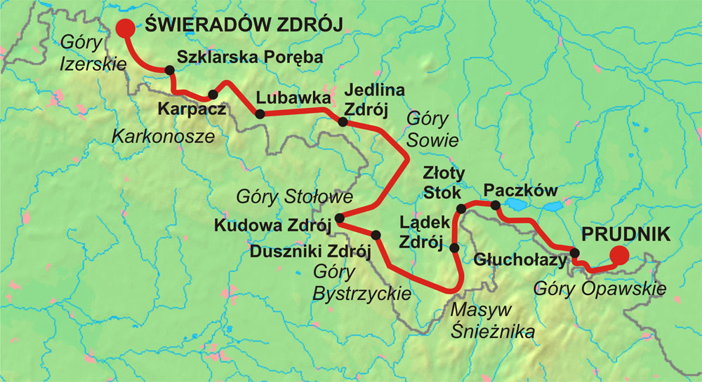
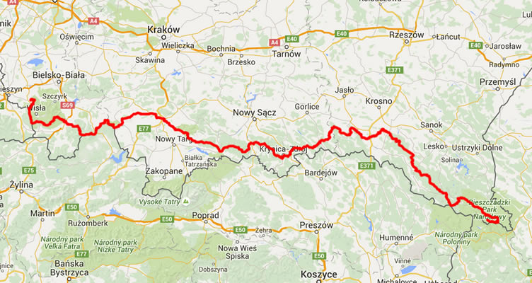
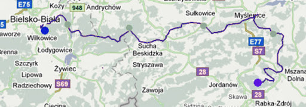
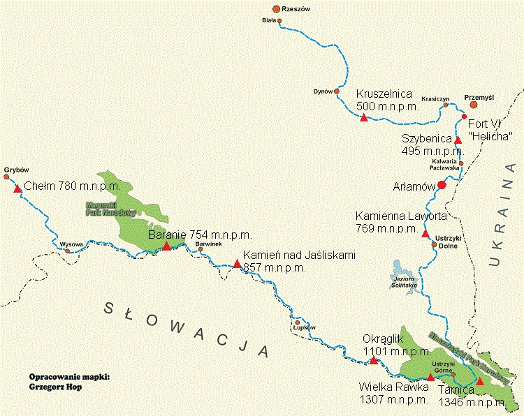

W tej zakładce przedsatwiam listę głównych (moim zdaniem najważniejszych) szlaków w Polskich górach. Aby dowiedzieć się o danym szlaku więcej kliknij w nazwę szlaku bądź jego mapkę.
5 subiektywnie najważniejszych Polskich szlaków
- Główny Szlak Sudecki  Trasa Głównego Szlaku Sudeckiego
- Główny Szlak Beskidzki  Trasa Głównego Szlaku Beskidzkiego
- Mały Szlak Beskidzki  Trasa Małego Szlaku Beskidzkiego
- Szlak Rzeszów-Grybów  Trasa Szlaku Rzeszów-Grybów
- Główny Szlak
Świętokrzyski
 Trasa Głównego Szlaku Beskidzkiego
Trasa Głównego Szlaku Beskidzkiego